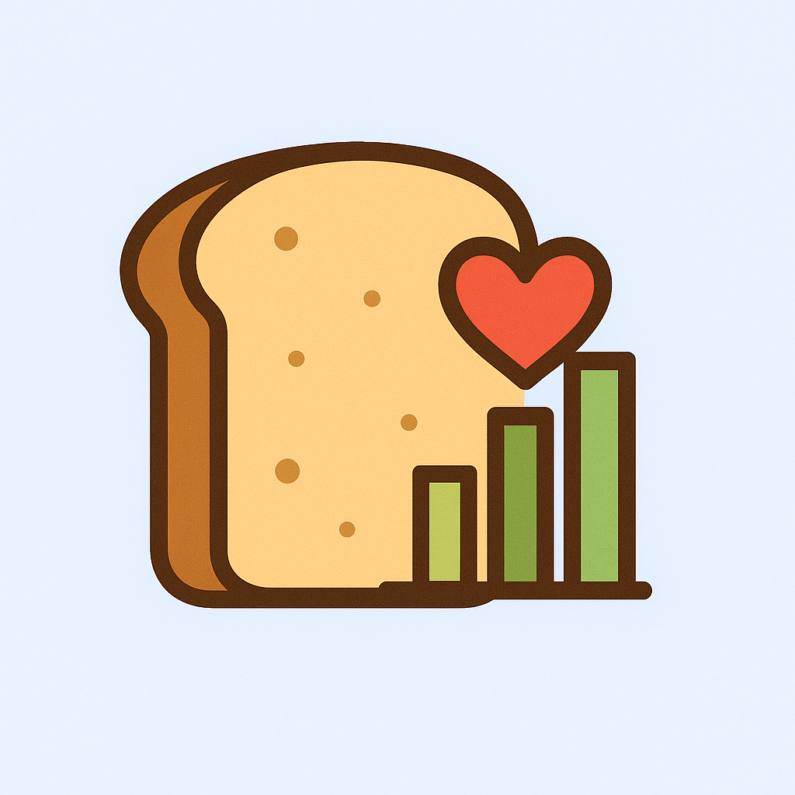

BreadBoard
Overview
BreadBoard helps students track their food, workouts, and overall fitness goals in one simple place.
What You Can Do Here
- Set Goals: Choose whether you want to maintain, bulk, or cut, and select your daily activity level so the site can guide your nutrition needs.
- Log Your Day: Record meals, calories, and workouts. Logging helps you stay consistent and understand your habits.
- View Your Dashboard: Check weekly progress including calories consumed, workouts completed, and macronutrient breakdowns.
- Get Recommendations: Explore simple meal ideas and suggestions tailored to your workout schedule and fitness goals.
- Learn More About the Project: Visit our About page to see the purpose of BreadBoard, the tools we used, and the team members who built it.
Why BreadBoard?
We wanted to create a lightweight, student-focused fitness tracker that’s easy to navigate and helps promote healthier habits on campus.